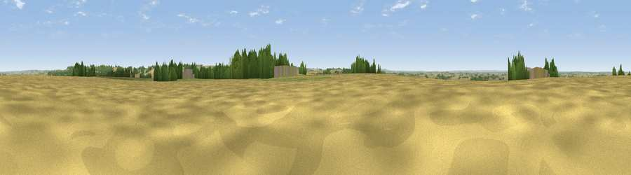

Viewpoint near Caythorpe
#23361 in England · top 26% of its area beats it · near CaythorpeThe view, rendered

A 360° render of this exact spot computed from the terrain model, tree cover and land cover — summer colours, afternoon light, calibrated against photographs of famous viewpoints. Real trees, hedges and buildings will differ in detail.
The panorama
Grey silhouette: terrain skyline in each direction (720 bearings, Earth curvature and refraction included). Dashed green: skyline with trees (+15 m) and buildings (+8 m) as obstacles. Blue strip: how far the ground is visible on each bearing.
Where the view opens
Wedge length = distance to the farthest visible ground on that bearing (vegetation-aware). Rings at 10, 25 and 50 km.
What fills the view
60% cropland · 25% grassland · 12% woodland · 3% built-up
Angular shares of the visible panorama (visual magnitude), not map area. Landscape diversity 0.44 (0–1 Shannon).
Key numbers
More beautiful places nearby
The staircase of upgrades: each row has a higher view potential than everything closer. Driving times are estimates from straight-line distance, calibrated against real road routing — check an actual route before setting out.
| Place | Direction | Drive | Score |
|---|---|---|---|
| Summerfield's Hill | SSW · 5 km | ~11 min | 51.5 |
| Viewpoint near Wellingore | NNE · 9 km | ~18 min | 52.5 |
| Viewpoint near Great Gonerby | SSW · 10 km | ~19 min | 62.0 |
| Viewpoint near Belvoir | SW · 19 km | ~32 min | 70.8 |
| Viewpoint near Claxby | NNE · 50 km | ~71 min | 71.5 |
| Viewpoint near Woodhouse Eaves | SW · 54 km | ~76 min | 77.7 |
| Viewpoint near Mow Cop | W · 107 km | ~132 min | 78.9 |
| Viewpoint near Mow Cop | W · 108 km | ~132 min | 80.2 |
53.03045, -0.61056 · source: osm peak · position refined by local search. Computed location — check access rights before visiting.